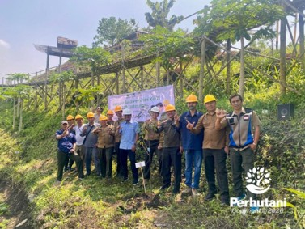

TASIKMALAYA, PERHUTANI (29/01/2026) | Perum Perhutani Kesatuan Pemangkuan Hutan (KPH) Tasikmalaya berpartisipasi aktif dalam peringatan Hari Lahir (Harlah) ke-21 Serikat Karyawan (SEKAR) Perhutani DPD Tasikmalaya yang diselenggarakan pada Selasa 27 Januari 2026 di kawasan Wisata Bukit Panyangrayan, Desa Sukapura, Kecamatan Sukaraja, Kabupaten Tasikmalaya.
Peringatan Harlah diawali dengan apel bersama seluruh peserta yang terdiri dari jajaran manajemen Perhutani, pengurus dan anggota SEKAR, serta para mitra strategis. Rangkaian kegiatan dilanjutkan dengan tasyakuran dan pemotongan tumpeng sebagai simbol rasa syukur atas perjalanan organisasi yang telah memasuki usia lebih dari dua dekade.
Salah satu agenda utama dalam peringatan ini adalah aksi penanaman pohon Multi Purpose Tree Species (MPTS) sebagai bentuk komitmen nyata dalam mendukung program kelestarian hutan dan lingkungan yang berkelanjutan. Kegiatan penanaman ini juga dimaknai sebagai wujud kolaborasi antara perusahaan dan serikat dalam menjaga ekosistem hutan.
Dalam sambutannya, Administratur Perhutani/KKPH Tasikmalaya, Danu Prasetyo, menyatakan bahwa momen Harlah menjadi momentum penting untuk menguatkan sinergi antara manajemen dan mitra kerja, termasuk serikat karyawan dan masyarakat desa hutan. “Peringatan ini bukan sekadar seremoni, ini adalah manifestasi komitmen kami untuk terus berkolaborasi demi hutan yang lestari sekaligus memberikan manfaat bagi masyarakat di sekitar kawasan,” ujarnya menguatkan integrasi operasional dan sosial perusahaan.
Puncak acara juga diwarnai dengan penyampaian pernyataan dari Ketua SEKAR Perhutani DPD Tasikmalaya, Uu Wahyudin, yang menegaskan peran strategis serikat dalam mendorong pemerataan kesejahteraan anggota. “Usia 21 tahun ini menjadi bukti eksistensi dan dedikasi kami dalam mendukung Perhutani serta memperjuangkan hak dan kesejahteraan karyawan, sambil ikut menjaga kelestarian lingkungan.”ujarnya.
Kehadiran dan dukungan berbagai pihak eksternal juga memberi warna penting pada peringatan ini. Tampak hadir Kepala Cabang Dinas Kehutanan Wilayah VI, Dinas Tenaga Kerja Kota Tasikmalaya, serta elemen masyarakat lainnya yang turut berkontribusi dalam mensukseskan acara dan memperkuat jejaring kolaboratif.
Dalam sesi yang sama, Ketua LMDH Sadaukir, Anang, sebagai mitra kemitraan kehutanan, mengapresiasi dukungan Perhutani dalam pengelolaan kawasan wisata Bukit Panyangrayan. Anang menegaskan bahwa kolaborasi tersebut telah memberikan dampak positif bagi pengembangan ekonomi lokal sekaligus memperkuat upaya pelestarian hutan. “Kerja sama ini menjadi fondasi kuat bagi kami untuk terus menjaga kawasan hutan sekaligus memberikan manfaat bagi masyarakat desa hutan dan generasi masa depan,” ungkapnya.
Partisipasi aktif LMDH dalam kegiatan penanaman pohon juga menegaskan bahwa kemitraan produktif antara Perhutani dan masyarakat bukan sekadar formalitas, tetapi telah menjadi bagian dari praktik nyata dalam pengelolaan sumber daya alam yang berkelanjutan.
Peringatan Harlah ke-21 SEKAR Perhutani DPD Tasikmalaya menjadi wadah konsolidasi untuk memperkuat soliditas internal serikat karyawan, manajemen perusahaan, dan pemangku kepentingan lainnya. Momentum ini sekaligus mengokohkan komitmen bersama dalam menerapkan praktik pengelolaan hutan yang produktif, adil, dan berorientasi pada dampak sosial positif.
Melalui kegiatan ini, Perhutani KPH Tasikmalaya berharap hubungan kerja antara manajemen, serikat karyawan, dan komunitas sekitar hutan akan terus meningkat secara sinergis, sehingga mampu membawa dampak ekonomi dan ekologis yang berkelanjutan untuk kawasan hutan serta kesejahteraan masyarakat lokal.
Editor: WK
Copyright © 2026 Warta Nusantara Barat